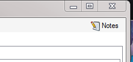

Introduction
Purpose of this document
This document describes how to install and use the Rule-Based Dose Escalation (DE) Fixed and Adaptive Clinical Trial Simulator (FACTS) software (from now on referred to as Dose Escalation Fixed and Adaptive Clinical Trial Simulator Software). It is intended for all end users of the system.
Scope of this document
This document covers the Dose Escalation Fixed and Adaptive Clinical Trial Simulator Software by describing the user interface. It covers the 3+3 and mTPI. It does not cover the CRM design engine which has its own User Guide.
This document does not address the internal workings of the design engines or algorithms, which are addressed in the associated Design Engine Specification. It also does not address the use of FACTS Core Designs or Enrichment Designs, which are covered in other User Guides.
The screenshots provided are specific to a particular installation and may not reflect the exact layout of the information seen by any particular user. They were taken from FACTS, 5 or later if changed, installed on Windows 7 and Windows 10. Different versions of Windows or the use of different Windows themes will introduce some differences in appearance. The contents of each tab, however, will be consistent with the software.
Context of this Issue
This document is a guide to the version 7.1 release of Dose Escalation FACTS.
There have been no changes to these elements of FACTS since FACTS 6.1.
Citing FACTS
Please cite FACTS wherever applicable using this citation.
Definition of Terms
An overview of the acronyms and abbreviations used in this document can be found here.
FACTS Overview
The Fixed and Adaptive Clinical Trial Simulator allows designs for a clinical trial to be evaluated and compared to traditional designs, thus allowing designs to be optimized. The designs fit a selected model to endpoints of interest, and evaluate pre-specified decisions based on the properties of the fitted model. These decisions may include selecting the dose to allocate to the next subject, and whether sufficient data has been gathered to allow the trial to be stopped.
There are currently four non-deprecated design engines for Dose Escalation FACTS: 3+3, mTPI, N-CRM and 2D-CRM. All design engines are accessed through the singular interface of the Dose Escalation version of FACTS.
This User Guide covers 3+3 and mTPI. CRM and 2D-CRM have their own user guides.
FACTS 7.1 Changes to Dose Escalation
The CRM (Toxicity), CRM (Ordinal), CRM (Efficacy), bCRM are now considered deprecated. Existing designs will still work as expected, but users starting a new design are encouraged to switch over to the new CRM engine if possible.
FACTS 7.0 Changes to Dose Escalation
In FACTS 7.0 the only change was on the Analysis tab, when entering subject data manually, the FACTS GUI now ensures that a cohort number is entered for every subject.
FACTS 6.5 Changes to Dose Escalation
In FACTS 6.5 there were no changes to the Dose Escalation simulators.
FACTS 6.4 Changes to Dose Escalation
In FACTS 6.4 there were no changes to the Dose Escalation simulators.
FACTS 6.3 Changes to Dose Escalation
In FACTS 6.3 there were no changes to Dose Escalation except in N-CRM which is described in its own User Guide.
FACTS 6.1 Changes to Dose Escalation
In FACTS 6.1:
Two new types of design have been added:
The mTPI design - described in this document.
The 2D-CRM for phase 1 dose escalation trials of combinations of multiple doses of 2 drugs described in the FACTS DE 2D-CRM User Guide.
A design variant facility has been added to the N-CRM engine that allows the user to easily simulate and evaluate an N-CRM design at different sample sizes. See the updated FACTS DE N-CRM User Guide for details.
Note that from FACTS 6.0 onwards the default MCMC sampling length for Dose Escalation designs was increased from 2500 to 25000. This was because it was found that with the shorter sampling length the results were too inconsistent. It has however significantly slowed the speed with which FACTS DE designs are run.
The FACTS Rules-Based Dose Escalation GUI
The FACTS Rule-Based Dose Escalation GUI conforms to the standard FACTS GUI
The Study Tab has sub-tabs for entering Study Information and specifying the Treatment Arms (doses) available in the study. This is where the user specifies the given requirements, or constraints, of the trial to be designed.
The Virtual Subject Response tab has sub-tabs for specifying Explicitly Defined response profiles to simulate and loading External data files of simulated subject responses. This is where a set of different toxicities rates per dose are specified that should represent the expected space of the expected dose-toxicity profiles for the compound being tested.
The Design has sub-tabs for specifying the Allocation Rules, Stopping rule and Toxicity Response model. These are the design choices open to the trial biostatistician. The expected consequences of these design choices to be estimated by running simulations of the trials using the various virtual subject response profiles defined.
On the Simulation Tab, the user controls and runs simulations and can view the simulation results.
On the Analysis tab, the user can load an example data set and view the results of the FACTS analysis of that data using the current specified design.

Figure 41 - Tab layout of FACTS
Also on the menu bar, on the right hand side of the FACTS Window, is a button labeled Notes; clicking this button reveals a simple notepad window in which the user can maintain some simple notes that will be stored within the .facts file.
 
The notepad window comes with two further buttons: one to change the window to a free floating one that can be moved away from the FACTCS window; and the other to close it.
The Notes field can be used for any text the user wishes to store with the file. Suggested uses are: to record the changes made in a particular version of a design and why; and to comment on the simulation results. This will help when coming back to work that has been set aside, to recall what gave rise to the different version of a design.
Introduction
To open the application, select FACTS Dose Escalation from your Start menu. At different points in the FACTS GUI, the user is required to make decisions about how to model or simulate various aspects of a clinical trial. To simplify data entry, FACTS shows the user only the information that is relevant to the current decisions.
FACTS has a tabbed design to allow entry of different categories of information about the design.
The File menu allows the user to create a new design, open an existing design, save a design, or copy a design to a new name (Save as). The saved design includes all parameters entered as well as simulation results, if they have been produced.
The Settings menu provides the ability to configure how simulation jobs should be submitted to the Grid. Selecting whether to execute simulations locally or on the Grid is done from the Simulation tab.
The Help menu allows the user to learn more about the FACTS software and verify the applications version number.
Finally, note that in all tabs of the application, red exclamation points

indicate errors in data entry from the user that must be corrected. Moving the cursor over the exclamation point causes a pop-up help text indicating what the error is, helping the user remedy the error.
Selecting a Design Model
Once the FACTS application has been opened, the user may select to model a clinical trial using any of the following design engines from the introduction screen or the File > New > Dose Escalation menu:
Once a design has been selected, the associated form of the GUI will be displayed, the contents of the tabs and sub-tabs of FACTS displaying the information relevant to the selected model. Additionally, the model type selected will appear in the title bar of FACTS to verify the users choice of design.
Study
Study Info
The Study Info sub-tab provides basic study parameters such as Trial Size and Cohort options, as relevant to the type of design. Depending on the choice of design engine, the Study info tab may also allow the user to enter specification for a two-sample population, Toxicity and/or Efficacy targets, response category options, or Joint Efficacy and Toxicity options.
Recruitment, like N-CRM the mTPI design includes the option to use Open Enrollment instead of recruitment by cohorts. A phase 1 trial using open enrolment recruits all comers with a cap on the number of subjects who can be treated but have not yet had a final result. Subjects that arrive whilst this cap has been reached are deemed to be lost to the study. If selected the user specifies the following additional parameters.
Maximum study size (subjects): the maximum number of subjects who can be recruited into the study.
Mean recruitment ate: for simulation purposes this is the average number of subjects who will be expected to be available for recruitment during each time period. Recruitment is simulated using a standard Poisson process.
Time until final result: the time for each subjects final result to become available. This is simulated as a fixed length of time that is the same for all subjects.
Maximum subjects without a final result: the cap on the number of subjects who can be recruited but not yet completed. This is also known as the maximum queue length. Subjects arriving and available for recruitment while the number of subjects treated but not yet completed is a the cap are dropped and assumed not available for recruitment once the current subjects complete but the study has to await further new subjects to become available.
Study Size (unless an mTPI design using open enrollment) for all designs this is specified in terms of the maximum number of cohorts.
- If the design is CRM(Toxicity) or CRM(Efficacy) and the option to include a Two sample population analysis is included then the Study Size applies to the first sample and with an additional parameter the user specifies the maximum size of the second sample, also in cohorts.
Cohort - (unless an mTPI design using open enrollment and if not a 3+3 design where cohorts are always of size 3 and must always complete before the next cohort is recruited) then the user can specify:
Cohort size: The number of subjects in each cohort. The maximum sample size for the trial is simply: Max Trial Size (cohorts) * Cohort Size.
Cohort information delay: Normally left at zero, this allows for the trial to be simulated with cohorts recruited more quickly than if waiting for the last cohort to complete before treating the next cohort. This allows the trial to complete in shorter time, but is likely to lead to a larger incidence of toxicities. If the delay is set to 1, the second cohort will be recruited before the results for the first cohort are available, the third cohort will be recruited after the results of the first cohort are available but before the results for the second cohort are available, and so on.
Joint Efficacy and Toxicity (bCRM only) there is a flag that the user can set to indicate that a subject cannot experience both toxicity and efficacy (toxicity censors or prevents efficacy).
Single subject run-in (CRM(Toxixity), bCRM, CRM(Ordinal) only) this allows the user to specify that the trial is to start with a single subject run-in. With a single subject run-in, subjects are allocated in cohorts of one, incrementing by one dose strength each cohort until a toxicity is observed. The user has the option to specify whether, on observing the first toxicity, the first full cohort is then allocated at that dose, or at the dose below.
Target (mTPI only) somewhat similar to the N-CRM, in mTPI the target is defined as toxicity bands rather than single toxicity rate. The user specifies the lower and upper bounds of the target toxicity band as well as a target toxicity rate within that band.
The parameters to specify the Toxicity target are displayed for CRM(Toxicity), bCRM and CRM(Ordinal) designs. These allow the user to specify the maximum tolerated toxicity target and choose which dose should be selected based one of the following criteria:
nearest dose to target
nearest dose above the target (except for ordinal CRM)
nearest dose below the target
If a control arm is included with the Treatment arms then there is the option to specify that the target toxicity rate is relative to control, not absolute.
Similarly the parameters to specify the Efficacy target are displayed for CRM(Efficacy) and bCRM. These allow the user to specify the maximum tolerated toxicity target and choose which dose should be selected based one of the following criteria:
nearest dose to target
nearest dose above the target (except for ordinal CRM)
nearest dose below the target
If a control arm is included with the Treatment arms then there is the option to specify that the target efficacy rate is relative to control, not absolute.
Cohort Expansion (all designs except CRM(Efficacy) The user can specify that after the dose escalation phase of the trial has completed, the simulation is to include an expansion cohort allocated at the final value of the target dose, and how large that expansion cohort will be.
If a Control arm has been included, then there can be a specific allocation to Control as well (these are taken from the overall cohort size, they are not additional to it).
In bCRM the user selects whether the expansion cohort is allocated to the MTD, MED or OSD.
Figure 4 displays the Study Info sub-tab for a bCRM design. The functionality and look of the tab is similar for other CRM designs and mTPI.
Treatment Arms
The Treatment Arms sub-tab (Figure 5) provides an interface for specifying the various dose levels, and (except in 3+3) a Control treatment arm.
If a control arm is included:
Target rates can be specified to be relative to control (otherwise they are absolute).
A specific number of subjects are specified to be allocated to control in each cohort
The response on the Control arm can be included in the dose response model, or modeled separately (using a simple beta-binomial model) in which case monotonicity is not enforced.
The user may add doses either explicitly or by auto-generation, as depicted below. The user may also edit the Dose Names within the table by double clicking on any existing dose name, however the index cannot be edited.
Note that the CRM designs use transformed dose levels, and unlike the Dose Finding designs do not have a relative dose level specified.
Virtual Subject Response
The Virtual Subject Response tab allows the user to explicitly define response profiles, and/or to import files of virtual subject responses. When simulations are executed, they will be run separately for each profile defined by the user.
Explicitly Defined
Toxicity [3+3, CRM(Toxicity), mTPI and bCRM]
The Toxicity sub-tab provides an interface for specifying one or more Toxicity profiles.
Toxicity profiles may be added, deleted, and renamed using the table and corresponding buttons on the left hand side of the screen in Figure 6. Toxicity values are entered directly into the Probability of Toxicity column of the table, and the graphical representation of these toxicity values updates accordingly. The graph may be modified by plotting the log of the dose strength as the x-axis, and by plotting the logit or the probability of toxicity as the y-axis.
This graph as with all graphs in the application may be easily copied using the Copy Graph option in the context menu accessed by right-clicking on the graph. The user is given the option to copy the graph to their clipboard (for easy pasting into other applications, such as Microsoft Word or PowerPoint), or to save the graph as an image file.

When using a bCRM design engine, if the Toxicity and Efficacy profiles are specified separately, then the results are simulated without correlation. To simulate correlation in the results it is necessary to specify joint profiles.
Toxicity with 2 Samples [CRM(Toxicity)]
If utilizing a CRM (Toxicity) design, the user has the option to model two sample populations (this option may be selected on the Study Info tab, as described here). If the user elects to enable the modeling of two samples, then the Toxicity sub-tab allows the user to input probabilities of Toxicity for each sample, as displayed in Figure 7 below.
Ordinal Toxicity [CRM(Ordinal)]
For CRM (Ordinal) designs, the user must specify the probability of toxicity at or above each category. Ordinal designs can use either three or four categories, with a category three toxicity corresponding to a toxic response in a CRM (Toxicity) design. Toxicity data must be entered for each category greater than 1 and must be monotonically decreasing with category (Figure 8).
Efficacy [CRM (Efficacy) and bCRM]
Similar to the Toxicity sub-tab, the Efficacy sub-tab provides an interface for specifying one or more Efficacy profiles.
Efficacy profiles may be added, deleted, and renamed using the table and corresponding buttons on the left hand side of the screen.
Efficacy values are entered directly into the Probability of Efficacy column of the table, and the graphical representation of these efficacy values updates accordingly.
If utilizing a bCRM design, in which both Toxicity and Efficacy profiles are utilized, the user must ensure that profile names are unique. FACTS does not allow the user to enter Toxicity profiles and Efficacy profiles which are named identically.
Finally, if utilizing a CRM (Efficacy) design, the user has the option to model two sample populations (this option may be selected on the Study Info tab, as described here). If the user elects to enable the modeling of two samples, then the Efficacy sub-tab allows the user to input probabilities of Efficacy for each sample, just as in the case of CRM (Toxicity) illustrated in Figure 9.
Joint Efficacy / Toxicity [bCRM]
The Joint Efficacy / Toxicity sub-tab (Figure 10) allows the user to specify the probability of efficacy, toxicity, and success at each dose.
Joint profiles may be added, deleted, and renamed using the table and corresponding buttons on the left hand side of the screen in (Figure 10). The user must ensure that any profile name entered on this tab is unique from all other profile names in the application, whether on this tab, or on the Toxicity sub-tab or the Efficacy sub-tab.
Probabilities of toxicity, efficacy, and success are entered directly into the table, and the graphical representation of these probabilities updates accordingly. Success is the probability of observing efficacy without toxicity, thus the rate for success is naturally bounded:
The probability of success at a dose cannot exceed the probability of efficacy at that dose.
The probability of success at a dose cannot exceed (1 the probability of toxicity) at that dose.
The probability of success cannot be less than the probability of efficacy minus the probability of toxicity at that dose.
If the user enters probabilities violating these limit, then FACTS mark them as invalid and will refuse to simulate the scenarios including the profile. FACTS reports to the user, on the Simulation tab, that the following error has been found: True toxicity and Efficacy curve is not in range [0,1] and will ask the user to resolve the error before running simulations.
Joint Efficacy / Toxicity profiles may also be generated from models, rather than explicitly. This way of specifying Joint Efficacy / Toxicity profiles is described in this section.
External
Subject response data may be simulated from a PK-PD model in place of or in addition to choosing a response model from FACTS. The importing of subject response data (which must be in the form specified in the System Requirements Document) may be done from the External Files sub-tab depicted below (Figure 11).
To import an external file, the user must first add a profile to the table. After adding a profile, the user must click Browse to locate the externally simulated data. The user will then be prompted to locate the external file on their computer with a dialog box.
Parametric [bCRM] (#sec-parametric-bcrm)
The Parametric sub-tab allows the user to specify the Joint Efficacy / Toxicity profiles as modeled by Cox or Gumbel functions. This allowance is in contrast to the explicit definition of Joint Efficacy / Toxicity profiles, as may be done in the Joint Efficacy / Toxicity sub-tab of the Explicitly Defined Response tab (see this section).
The interface of the Parametric tab is displayed below (Figure 12). As with other Virtual Response sub-tabs, profiles may be added, deleted, and renamed using the table and corresponding buttons on the left hand side of the screen in Figure 12.
Design
The Design Tab allows the user to select allocation and sampling rules, and to select toxicity and efficacy models from among a list available for this release. Stopping criteria may also be set from within the Design tab.
Toxicity and Efficacy Response tabs [CRM (Efficacy), CRM (Toxicity) and bCRM]
On the Toxicity and Efficacy Response sub-tabs, the user may choose toxicity and efficacy models from among a list available for this release. The supported models for modeling toxicity and efficacy response in this release are logistic, tanh, and power for one sample studies, and tanh (x-b) for two sample studies.
The user has the option to set the Minimum and Maximum parameter values, which define the toxicity/efficacy asymptotes. These values are used to rescale the probabilities and calculated the scaled dose values, X^ (X-hat). These default to 0 and 1, but if the endpoint being observed is expected to have a background rate (that would be observed even if placebo were administered) or a natural maximum rate (that would not be exceeded whatever the strength of dose used), then the model fitting will be improved
The Toxicity Response tab is depicted below in Figure 14; the Efficacy Response tab has a similar appearance.
The user selects the model type:
Logisitic, in which case the fixed value for the Alpha parameter is specified (usually this is set to 3 giving a toxicity rate of 0.953 at a dose with a transformed dose strength of 0. Effective dose strengths should typically be in the range (-8, -1)
Tanh in which case the effective dose strengths should typically be in the range (-2, 1)
Power in which case the effective dose strengths should typically be in the range (0,1)
The user specified the prior distribution of the estimated model parameter (Beta) either as an Exponential (1) distribution or a uniform distribution (0,U) where U is specified by the user.
The effective dose strengths of the doses are specified in the Model Priors table. They can be specified in one of two ways:
By defining a prior probability of toxicity for each dose. The corresponding transformed dose strength is then calculated as the value that would yield that toxicity rate from the model with Beta=1. The corresponding transformed dose strength is shown in the right hand column. Care needs to be taken with this approach that the resulting transformed dose strengths are well spaced out this can be checked on the graph that shows the transformed dose strengths, and the corresponding toxicity rate on the graph of the Beta=1 model.
Be specifying the effective dose strength explicitly. Care needs to be taken with this approach, depending on the model this may yield nonsensical toxicity rates, but once the correct range for the transformed doses is understood, it easier to ensure a good spacing of the transformed dose strengths.
Toxicity Response tab [CRM(Ordinal)]
Design tab [mTPI]
The mTPI method has two parameters that can be specified
The first is an option to prevent re-escalating to a dose (the DU or Do not Use category in the diagram) if the posterior probability that the toxicity rate is above the target toxicity plus the delta: pT+U (on the Study > Study Info tab this is the Upper Bound parameter) exceeds a specified threshold (0.95 is the default).
The second is an option that allows an early stopping rule to be specified that if the dose to be allocated next already has the maximum number of subjects on it then it is declared the MTD. Setting this value shrinks the size of the table displayed.
Given the target toxicity rate and the boundaries specified on the Study > Study Info tab, and the parameters specified here the table of mTPI dosing decisions is displayed. This shows the dosing decision given the number of subject treated at the current dose and the number of toxicities observed:
E Escalate
S Stay
D De-escalate
DU De-escalate and do not revisit
Allocation Rule
The Allocation Rule sub-tab is depicted below (Figure 17); it allows the user to set basic allocation parameters, including Maximum Dose Increment, Minimum Cohorts on Dose prior to Increment, and Maximum number of Cohorts used to determine MTD (bCRM only).
The dose range may be split with a greater maximum increment allowed in the upper part of the range than in the lower.
When specifying the maximum dose increment, the user has two options of how to apply that increment; relative to the current dose or relative to the highest dose with a specified number of cohorts. In other words, the largest possible value for the next allocation at any point in the trial is either the current dose level plus the Maximum Dose Increment, or the highest dose that has been allocated to Max Subjects Before Incrementing plus the Maximum Dose Increment.
Also on this tab, the user may specify sampling rule parameters, namely the initial dose level for sampling. If using a 3+3 design, the sampling rule parameters will be the only parameters on this screen (and hence the tab will be called Sampling Rule in place of Allocation Rule), since allocation does not apply to the 3+3 design engine.
If utilizing a CRM (Toxicity) design, and if the option to model two sample populations has been enabled (this option may be selected on the Study Info tab, as described in this section), the user also has the option to set the initial dose for the second population.
Additionally, a single subject run-in can also be specified on the Allocation Rule tab. A single subject run-in starts at the specified starting dose and allocates a single subject to each dose until either a toxicity is observed or the maximum dose is reached. This option is available for CRM (Toxicity), CRM (Ordinal), and bCRM only. Note that subjects in the single subject run-in are not included in the max trial size, so with a single subject run-in, it is possible to end a simulation with more subjects that were specified in the max trial size.
If a Control treatment arm has been included, the user must also specify the number of subjects per cohort that should be allocated to Control. The Control dose is treated differently than the active doses, and cannot ever be found as the MTD or MED. Thus, it will never be assigned a cohort based on the fitted model, and must have subjects assigned per cohort.
Finally, if utilizing a CRM (Efficacy) design, the user also has the option on this tab to allocate extra subjects to the min or max dose, as shown in Figure 19. Probability gamma is used to ensure that the numbers of subjects allocated to the maximum and minimum stay close to their specified values. Setting gamma () to 0 turns this off, so the actual number allocated may drift away from the number expected. 2 is a good value to enable this correction.
The formula used is:
\(p = p_T^{\gamma (p_O - p_T)}\)
where pT is the target probability as entered above, pO is the observed probability measured from the subjects allocated so far and p is corrected the probability that will be used in allocation. To prevent wild allocations, p is subject to the restrictions, p<0.5 and pT/4 < p < 4pT.
When a Control treatment arm is included, it is treated as the minimum dose, and gives the user another option of how to allocate to it. In this case, the user can specify a probability of allocating whole cohorts to the Control, or a number of subjects per cohort allocated to Control. The two options cannot be combined.
Stopping Criteria (CRM (Efficacy), CRM (Toxicity), CRM (Ordinal), N-CRM and bCRM only)
For any design, including 3+3, study simulation will always stop when the maximum number of subjects has been achieved.
The study simulation may also stop early when the following conditions that have been enabled by the user are met:
MTD finding (CRM (Toxicity), N-CRM and bCRM only)
the user-specified minimum number of subjects are allocated to the MTD
AND the following optional rules either ANDed or ORed together.
The number of dose levels in the specified confidence interval meets the specified the threshold
There is a dose with a probability of being the MTD that is greater than the specified threshold.
The minimum number of cohorts have been accrued
MED finding (CRM (Efficacy) and bCRM only)
the user-specified maximum number of subjects are allocated to the MED
the number of dose levels in the confidence interval meets the specified number
there is a dose with a probability of being MED that is greater than the specified threshold
The minimum number of cohorts have been accrued
mTPI when the user specified number of subjects are already allocated to the next dose to be allocated this is specified on the mTPI Design tab.
When studying two samples, stopping rules will be evaluated and applied separately for each sample.
These parameters are set on the Stopping Criteria sub-tab as depicted below in Figure 20 Stopping tab CRM Toxicity.
For bCRM the stopping rules become the rules for stopping the MTD phase and starting the MED phase. There are then similar rules that can be used for stopping the MED phase early.
Finally, if utilizing a CRM (Efficacy) design, the user may specify an additional set of parameters for stopping for futility, as displayed at the bottom of Figure 22. These allow the trial to be stopped early for futility. If the user enable these rules then the user can specify:
That a minimum number of cohorts must have been allocated to the minimum and maximum doses.
That the trial will stop unless there is a minimum difference in the mean response between the minimum and maximum doses.
Simulation
The Simulation tab allows the user to execute simulations for each of the scenarios specified for the study. The user may choose the number of simulations, whether to execute locally or on the Grid, and modify the random number seeds (Figure 23).
If completed results are available, the actual number of simulations run for each scenario is reported in one of the first columns of the results table. The value displayed in the Number of Simulations control is the number of simulations that will be run if the user clicks on the Simulate button.
N.B. FACTS uses Markov Chain Monte Carlo methods in the generation of simulated patient response data and trial results. In order to exactly reproduce a statistical set of results, it is necessary to start the Markov Chain from an identical Random Seed. The initial random seed for FACTS simulations is set from the simulation tab, the first thing that FACTS does is to draw the random number seeds to use at the start of each simulation. It is possible to re-run a specific simulation, for example to have more detailed output files generated, by specifying start at simulation.
Say the 999th simulation out of a set displayed some unusual behavior, in order to understand why, one might want to see the individual interim analyses for that simulation (the weeks file), the sampled subject results for that simulation (the Subjects files) and possibly even the MCMC samples from the analyses in that simulation. You can save the .facts file with a slightly different name (to preserve the existing simulation results), then run 1 simulation of the specific scenario, specifying that the simulations start at simulation 999 and that at least 1 weeks file, 1 subjects file and the MCMC samples file (see the MCMC settings dialog) are output.
Even a small change in the random seed will produce different simulation results.
The same random number seed is used at the start of the simulation of each scenario. If two identical scenarios are specified then identical simulation results will be obtained. The same may happen if scenarios or designs only differ in ways that have no impact on the trials being simulated, for instance designs that have no adaptation, or scenarios that dont trigger any adaptation (e.g. none of the simulations stop early).
The user can specify:
the number of simulations for which Cohorts files are written. Cohorts files record the data, analysis and recommendation at each interim (after each cohort).
The parallelization packet size, this allows simulation jobs to be split into runs of no-more than the specified number of trials to simulate. If more simulations of a scenario are requested than can be done in one packet, the simulations are started as the requisite number of packets and the results combined and summarized when they are all complete so the final results files look just as though all the simulations were run as one job or packet. When running simulations on the local machine FACTS enterprise version will process as many packets in parallel as there are execution threads on the local machine. The overhead of packetisation is quite low so a packet size of 10 to 100 can help speed up the overall simulation process threads used to simulate scenarios that finish quicker can pick up packets for scenarios that take longer, if the number of scenarios is no directly divisible by the number of threads packetisation uses all threads until the last few packets have to be run and finally the Simulations complete figure can be updated at the end of each packet, so the small the packet the better FACTS can report the overall progress.
To run simulations
Click in the check box in each of the rows corresponding the to the scenarios to be run. FACTS displays a row for each possible combination of the profiles that have been specified: - baseline response, dose response, longitudinal response, accrual rate and dropout rate. Or simply click on Select All.
Then click on the Simulate button.
During simulation, the user may not modify any parameters on any other tab of the application. This safeguard ensures that the simulation results reflect the parameters specified in the user interface.
When simulations are started, FACTS saves all the study parameters, and when the simulations are complete all the simulation results are saved in results files in a _results folder in the same directory as the .facts file. Within the _results folder there will be a sub-folder that holds the results for each scenario.
How many simulations to run?
After first entering a design it is worth running just a small number of simulations such as 10 to check that the scenarios and design have been entered correctly. If all 10 simulations of a null scenario are successful, or all 10 simulations of what was intended to be an effective drug scenario are futile, it is likely there has been a mistake or misunderstanding in the specification of the scenarios or the final evaluation or early stopping criteria.
Once the design and scenarios look broadly correct, it is usually worth quickly collecting rough estimates of the operating characteristics using around 100 simulations for each scenario. 100 simulations is enough to spot designs having very poor operating characteristics such as very high type-1 error, very poor power, a strong tendency to stop early for the wrong reason, or poor probability of selecting the correct target. 100 simulations is also usually sufficient to spot problems with the data analysis such as poor model fits and significant bias in the posterior estimates.
Typically 1,000 simulations of each scenario of interest is required to get estimates of the operating characteristics precise enough to compare designs and tune the parameters. (Very roughly rates of 5% (such as type-1 error) can be estimated to about +/-1.5% and rates of around 80% (such as power) estimated +/- 2.5%)
Finally around 10,000 simulations of the scenarios of interest is required to give confidence in operating characteristics of a design and possibly to select between the final shortlisted designs (Approximately rates of 5% can be estimated to about +/-0.5% and rates of around 80% estimated +/- 1%).
There may be many operating characteristics need to be compared over a number of scenarios, such as expected sample size, type-1 error, power, probability of selecting a good dose as the target and quality of estimation of the dose-response.
However frequently these will be compared over a range of scenarios, it may not be necessary to run very large number of simulations for each scenario if a design shows a consistent advantage on the key operating characteristics over the majority of the scenarios.
Simulation results
In the main screen the summary results that are usually of principal interest are displayed, the results summarised by scenario.
Show other columns: Allows the user to open additional windows on the simulation results, the windows available are:
All: A window containing all the summary results columns
Highlights: (all) a separate window with the results shown on the main tab
Allocation, Observed: (all) summary results of the number of subjects allocated, the number allocated to each dose, the number of toxicities observed and the number of toxicities observed per dose
Fitted toxicity/efficacy/response: (all CRM) summary results of the estimates of the model parameters and the dose-toxicity.
Pr(MTD) etc / Pr(MED) etc: (all CRM) summary results of the posterior probabilities of the properties of interest. In bCRM these values are organised in three groupings called Probabilities, Toxicity and Efficacy.
Simulation Results: a window displaying the individual simulation results for each simulation of the currently selected scenario
Two Sample results: (CRM Toxicity)
View Graph: opens the FACTS built in graph utility displaying the results for the currently selected scenario. See Section 11 below for a description of the graphs.
Aggregate: opens a control that allows the user create aggregated results files from all the scenarios. The user can select which scenarios to include, and whether the results should be pivoted by dose. The resulting files are stored in the simulation results folder.
Open in R: If aggregated files have been created then clicking this button on the simulations tab will open control that allows the user to select which aggregations to load into data frames as R is opened. Otherwise it will offer to open R using the files in the currently selected scenario.
Right Click Menu: right clicking the mouse on a row of results in the simulation tab brings up a local menu of options:
Open results folder: Opens a file browser in the results folder of the scenario, allowing swift access to any of the results files.
Simulation results: Opens a window displaying the individual simulation results for each simulation of the currently selected scenario
Open in R: opens a control that will launch R, first loading the selected files in the results folder as data frames.
View Graphs: launches the graph viewer to view the results of the currently selected scenario.
MCMC Settings
The first two values specify two standard MCMC parameters
The length of burn-in is the number of the initial iterations whose results are discarded, to allow the sampled values to settle down.
The number of samples is the number of subsequent iterations whose results are recorded in order to give posterior estimates of the values of interest (in this case and ).
If the Number of MCMC samples to output value is set to N, where N > 0, then all the sampled values at each interim in the first N simulations are output, allowing the user to check convergence.
To obtain the MCMC sampled values for a particular simulation, keep the same Random number seed and use Start at simulation to specify the simulation in question and run just 1 simulation.
FACTS Grid Simulation Settings
If you have access to a computational grid, you may choose to have your simulations run on the grid instead of running them locally. This frees your computer from the computationally intensive task of simulating so you can continue other work or even shutdown your PC or laptop. In order to run simulations on the grid, it must first be configured, this is normally done via a configuration file supplied with the FACTS installation by the IT group responsible for the FACTS installation.
Detailed Simulation Results
After simulation has completed and simulation results have been loaded, the user may examine detailed results for any scenario with simulation data in the table by double-clicking on the row. A separate window (as in Figure 25) will reveal more detailed results about the simulation.
Right-clicking on a row displays a context menu from which the user can also view the corresponding cohort results:
Aggregation
Aggregation combines the csv output from multiple scenarios into fewer csv files. The Aggregate button displays a dialog which allows the user to select what to aggregate.
The default location for the aggregated files is the results directory for the study, but this can be changed.
Aggregation may be performed with or without pivoting on group, or both.
Unpivoted files will have one row for each row in the original files.
In pivoted files each original row will be split into one row per dose, plus two extra rows for below lowest and above highest.
Where there is a group of columns for each dose, they will be turned into a single column with each value on a new row.
If there is no value for the below lowest or above highest rows, they will be left blank.
Values in columns that are independent of group will be repeated on each row.
The default is to aggregate all scenarios, but any combination may be selected.
Pressing Aggregate generates the aggregated files.
Each type of csv file is aggregated into a separate csv file whose name begins agg_ or agg_pivot_, so agg_summary.csv will contain the rows from each of the summary.csv files, unpivoted. cohortsNNN.csv files are aggregated into a single agg_[pivot_]cohorts.csv file. Doses.csv is identical for all scenarios and so is not aggregated.
Each aggregated file begins with the following extra columns, followed by the columns from the original csv file:
| Column Name | Comments |
|---|---|
| Scenario ID | Index of the scenario |
| Toxicity Profile | A series of columns containing the names of the various profiles used to construct the scenario. Columns that are never used are omitted (e.g External Subjects Profile if there are no external scenarios) |
| External Subjects Profile | |
| Agg Timestamp | Date and time when aggregation was performed |
| Sim | Simulation number. Only present in the cohorts file. |
| Dose | Only present if pivoted |
The Summary Results Columns
Highlights (All)
These are the columns displayed on the simulations tab after simulations are completed, the can also be displayed in the separate Highlights results window.
| Column Title | Number of columns | Engines | Description |
|---|---|---|---|
| Select | 1 | All | Not an output column, this column contains check box to allow the user to select which scenario to simulate. The Select All button causes them all to be checked. |
| Status | 1 | All | This column reports on the current status of simulations: Completed, Running, No Results, Out of date, Error. It is updated automatically. |
| Scenario | 1 | All | This gives the name of the scenario. In the N-CRM this is simply the name of the Toxicity response profile to be simulated (in other Design Engines the scenario may be a combination of a number of profiles e.g. one for the toxicity response and one for the efficacy response). |
| Num Sims | 1 | All | The number of simulations that were run to produce the displayed results. |
| Random Number Seed | 1 | All | Base random number seed used to perform the simulations. |
| Mean Subj. | 1 | All | This is the mean (over the simulations) of the number of subjects recruited in this scenario. |
| PPn. Tox | 1 | All except CRM Efficacy | This is the average proportion of the subjects recruited that experienced a toxicity in the simulations of this scenario. |
| SD Ppn. Tox | 1 | All except CRM Efficacy | This is the standard deviation of the proportion of toxicity across the simulations of this scenario. |
| Ppn Eff | 1 | CRM Efficacy & bCRM | This is the average proportion of the subjects recruited that experienced an efficacy response in the simulations of this scenario. |
| SD Ppn Eff | 1 | CRM Efficacy & bCRM | This is the standard deviation of the proportion of efficacy across the simulations of this scenario. |
| True Ppn Tox | 1 | All except CRM Efficacy | This is the average true probability of toxicity over the simulations. The true probability of toxicity in a simulated trial is the average of the probabilities of toxicity all the subjects are exposed to, given the toxicity response profile of the scenario. |
| True Ppn Eff | 1 | CRM Efficacy & bCRM | This is the average true probability of efficacy over the simulations. The true probability of efficacy in a simulated trial is the average of the probabilities of efficacy all the subjects are exposed to, given the efficacy response profile of the scenario |
| MTD Selection: <dose> | One per dose | All except CRM Efficacy | For each dose, this is proportion of the simulations where it was selected as the MTD (Maximum Tolerated Dose) at the end of the study. The dose chosen will be the dose with the highest posterior probability being the MTD (closest dose to having the target toxicity rate or nearest below or nearest above as selected by the user on the Study Info tab. |
| MED Selection: <dose> | One per dose | CRM Efficacy & bCRM | For each dose, this is proportion of the simulations where it was selected as the MED (Minimum Efficacious Dose) at the end of the study. The dose chosen will be the dose with the highest posterior probability being the MED (closest dose to having the target efficacy rate or nearest below or nearest above as selected by the user on the Study Info tab. |
| OSD Selection: <dose> | One per dose | bCRM only | For each dose, this is proportion of the simulations where it was selected as the OSD (Optimum Selected Dose) at the end of the study. The dose chosen as the OSD will be the MED if that is below the MTD, otherwise it will be the MTD. |
| Ppn(All Tox) | 1 | All | The proportion of the simulations that stopped because all doses were too toxic. |
| Ppn(early Success) | 1 | All | The proportion of the simulations that stopped because sufficient stopping rules were met before the maximum number of cohorts had been treated. |
| Ppn(Cap) | 1 | All | The proportion of the simulations that stopped because the maximum number of cohorts had been treated. |
Allocations, Observed (All)
| Column Title | Number of columns | Engines | Description |
|---|---|---|---|
| Scenario | 1 | All | This gives the name of the scenario. In the N-CRM this is simply the name of the Toxicity response profile to be simulated (in other Design Engines the scenario may be a combination of a number of profiles e.g. one for the toxicity response and one for the efficacy response). |
| Mean Subj. | 1 | All | This is the mean (over the simulations) of the number of subjects recruited in this scenario. |
| Ppn. Tox | 1 | All except CRM Efficacy | This is the average proportion of the subjects recruited that experienced a toxicity in this scenario. |
| SD PPn. Tox | 1 | All except CRM efficacy | This is the standard deviation of the proportion of toxicity across the simulations, |
| Ppn, Eff | 1 | CRM Efficacy and bCRM only | This is the average proportion of the subjects recruited that experienced an efficacy response in the simulations of this scenario. |
| SD Ppn Eff | 1 | CRM Efficacy and bCRM only | This is the standard deviation of the proportion of efficacy across the simulations of this scenario. |
| True Ppn Tox | 1 | All except CRM Efficacy | This is the average true probability of toxicity over the simulations. The true probability of toxicity in a simulated trial is the average of the probabilities of toxicity all the subjects are exposed to, given the toxicity response profile of the scenario. |
| True Ppn Eff | 1 | CRM Efficacy and bCRM only | This is the average true probability of efficacy over the simulations. The true probability of efficacy in a simulated trial is the average of the probabilities of efficacy all the subjects are exposed to, given the efficacy response profile of the scenario |
| Num Phase 1 | 1 | bCRM Only | The mean (over the simulations) of the number of subjects allocated during phase 1 (the MTD finding part) of the trial. |
| Subj. Per Dose: <dose> | One per dose | All | This is the mean (over the simulations) of the number of subjects assigned to each dose. |
| SD Subjects: <dose> | One per dose | All | This is the standard deviation of the number of subjects assigned to each dose across the simulations. |
| Tox. Per Dose: <dose> | One per dose | All except CRM Efficacy | This is the mean (over the simulations) of the number of toxicities observed at each dose. |
| SD Tox. Per Dose: <dose> | One per dose | All except CRM Efficacy | This is the standard deviation of the number of toxicities observed at each dose across the simulations. |
| Eff. Per Dose: <dose> | One per dose | CRM Efficacy and bCRM only | This is the mean (over the simulations) of the number of efficacies observed at each dose. |
| SD Eff. Per Dose: <dose> | One per dose | CRM Efficacy and bCRM only | This is the standard deviation of the number of efficacies observed at each dose across the simulations. |
| 80% Num Subj | 1 | All | This is the 80th centile of the overall number of subjects recruited in each simulation. |
Fitted Toxicity (CRM Toxicity, CRM Ordinal, bCRM)
| Column Title | Number of columns | Engines |
|---|---|---|
| Scenario | 1 | All |
| Mean Beta 1 | 1 | All |
| SD Beta 1 | 1 | All |
| Mean Beta 2 | 1 | bCRM only |
| SD Beat 2 | 1 | bCRM only |
| Psi | 1 | bCRM only |
| SD Psi | 1 | bCRM only |
| Mean Fitted Toxicity: <dose> | One per dose | All |
| SD Fitted Toxicity: <dose> | One per dose | All |
| Mean Fitted Efficacy: <dose> | One per dose | bCRM only |
| SD Fitted Efficacy: <dose> | One per dose | bCRM only |
| True Toxicity: <Dose> | One per dose | All |
| True Efficacy: <dose> | One per dose | bCRM only |
| Mean Fit Tox Lower: <dose> | One per dose | All |
| Mean Fit Tox Upper: <dose> | One per dose | All |
| Mean Fit Eff Lower: <dose> | One per dose | bCRM only |
| Mean Fit Eff Upper: <dose> | Onse per dose | bCRM only |
Fitted Efficacy (CRM Efficacy)
| Column Title | Number of columns | Description |
|---|---|---|
| Scenario | 1 | This gives the name of the scenario. In the N-CRM this is simply the name of the Toxicity response profile to be simulated (in other Design Engines the scenario may be a combination of a number of profiles e.g. one for the toxicity response and one for the efficacy response). |
| Mean Beta 1 | 1 | This is the mean (over the simulations) of the mean of the posterior distribution of the estimate of the Beta parameter of the logistic model of the efficacy response |
| SD Beta 1 | 1 | This is the mean (over the simulations) of the standard deviation of the posterior distribution of the estimate of the Beta parameter of the logistic model of the efficacy response. |
| Mean Fitted Efficacy: <dose> | One per dose | This is the mean (over the simulations) of the mean estimate of efficacy from the fitted efficacy model for each dose |
| SD Fitted Efficacy: <dose> | One per dose | This is the standard deviation of the mean estimates across the simulations for each dose. Note it is not based on the standard deviation estimated in the simulations, it is the SD observed across the simulation results. |
| True Efficacy: <dose> | One per dose | This is the true simulated efficacy rate for each dose in the scenario |
| Mean Fit Eff Lower: <dose> | One per dose | This is the lower bound of the 95-percentile of the mean estimate of the efficacy rate across the simulations at each dose. |
| Mean Fit Eff Upper: <dose> | Onse per dose | This is the upper bound of the 95-percentile of the mean estimate of the efficacy rate across the simulations at each dose. |
Pr(MTD) etc. (CRM Toxicity, CRM Ordinal, Probabilities etc. bCRM)
| Column Title | Number of columns | Description |
|---|---|---|
| Scenario | 1 | This gives the name of the scenario. In the N-CRM this is simply the name of the Toxicity response profile to be simulated (in other Design Engines the scenario may be a combination of a number of profiles e.g. one for the toxicity response and one for the efficacy response). |
| MTD Selection: <dose> | One per dose | For each dose, this is proportion of the simulations where it was selected as the MTD at the end of the study. The dose chosen will be the dose with the highest posterior probability of having a toxicity rate that is closest to / nearest below / nearest above the target toxicity rate. |
| OSD Selection: <dose> | One per dose (bCRM only) | For each dose, this is proportion of the simulations where it was selected as the OSD at the end of the study. The dose selected will be the MED if that is below the MTD, otherwise it will be the MTD. |
| Num Stop Rule 1 | 1 | Number of times the minimum subjects on MTD was met. |
| Num Stop Rule 2 | 1 | Number of times the number of doses in the credible interval of the estimate of the MTD was met. |
| Num Stop Rule 3 | 1 | Number of times a dose met the required threshold for Pr(MTD). |
| Num Eff Stop Rule 1 | 1 (bCRM only) | Number of times the minimum subjects on MED was met. |
| Num Eff Stop Rule 2 | 1 (bCRM only) | Number of times the number of doses in the credible interval of the estimate of the MED was met. |
| Num Eff Stop Rule 3 | 1 (bCRM only) | Number of times a dose met the required threshold for Pr(MED). |
| Mean Tox CI | 1 | The mean (over the simulations) number of doses in the credible interval of the estimate of the MTD. |
| SD Tox CI | 1 | The standard deviation (over the simulations) of the number of doses in the credible interval of the estimate of the MTD. |
| Mean Eff CI | 1 (bCRM only) | The mean (over the simulations) number of doses in the credible interval of the estimate of the MED. |
| SD Eff CI | 1 (bCRM only) | The standard deviation (over the simulations) of the number of doses in the credible interval of the estimate of the MED. |
| Pr(MTD): <dose> | One per dose | The mean (over the simulations) of posterior probability that a dose is the dose nearest / closest below / closest above the target toxicity rate. |
| MTD+ Selection: minus | 1 | The proportion of simulations where a dose below the tested range of doses was selected as the maximum tolerated dose. |
| MTD+ Selection: <dose+> | 1 | As MTD Selection, but allowing for the possibility that the MTD is below or above the dose range being tested. |
| MTD+ Selection: plus | 1 | The proportion of simulations where a dose above the tested range of doses was selected as the maximum tolerated dose. |
| MED+ Selection: minus | 1 (bCRM only) | The proportion of simulations where a dose below the tested range of doses is most likely to be the minimum efficacious dose. |
| MED+ Selection: <dose> | One per dose (bCRM only) | As MED Selection, but allowing for the possibility that the MED is below or above the dose range being tested. |
| MED+ Selection: plus | 1 (bCRM only) | The proportion of simulations where a dose above the tested range of doses is most likely to be the minimum efficacious dose. |
| OSD+ Selection: minus | 1 (bCRM only) | The proportion of simulations where a dose below the tested range of doses is the optimum selected dose. |
| OSD+ Selection: <dose> | One per dose (bCRM only) | As OSD Selection, but allowing for the possibility that the OSD is below or above the dose range being tested. |
| OSD+ Selection: plus | 1 (bCRM only) | The proportion of simulations where a dose above the tested range of doses is the optimum selected dose. |
| Ppn. Best: <dose> | One per dose (bCRM only) | The proportion of times the dose was the dose with the highest probability of being Good. Where Pr(Good) is the probability of a dose being both at or above the MED and at or below the MTD. |
| Pr(MTD+) Below | 1 | The mean (over the simulations) of the posterior probability that a dose below the dose range being tested is the MTD. |
| Pr(MTD+) Above | 1 | The mean (over the simulations) of the posterior probability that a dose above the dose range being tested is the MTD. |
| Post CE MTD+: minus | 1 | The proportion of simulations where after the cohort expansion a dose below the tested range of doses was selected as maximum tolerated dose. |
| Post CE MTD+: <dose> | One per dose | The proportion of simulations where, after cohort expansion, the dose was selected as the maximum tolerated dose, allowing for the possibility that the MTD is below or above the dose range being tested. |
| Post CE MTD+: plus | 1 | The proportion of simulations where after the cohort expansion a dose above the tested range of doses was selected as maximum tolerated dose. |
| Post CE MED+: minus | 1 (bCRM only) | The proportion of simulations where after the cohort expansion a dose below the tested range of doses was selected as minimum efficacious dose. |
| Post CE MED+: <dose> | One per dose (bCRM only) | The proportion of simulations where, after cohort expansion, the dose was selected as the minimum efficacious dose, allowing for the possibility that the MED is below or above the dose range being tested. |
| Post CE MED+: plus | 1 (bCRM only) | The proportion of simulations where after the cohort expansion a dose above the tested range of doses was selected as minimum efficacious dose. |
| Post CE OSD+: minus | 1 (bCRM only) | The proportion of simulations where after the cohort expansion a dose below the tested range of doses was selected as the optimum selected dose. |
| Post CE OSD+: <dose> | One per dose (bCRM only) | The proportion of simulations where, after cohort expansion, the dose was selected as the optimum selected dose, allowing for the possibility that the OSD is below or above the dose range being tested. |
| Post CE OSD+: plus | 1 (bCRM only) | The proportion of simulations where after the cohort expansion a dose above the tested range of doses was selected as optimum selected dose. |
Pr(MED) Etc. (CRM Efficacy)
| Column Title | Number of columns | Description |
|---|---|---|
| Scenario | 1 | This gives the name of the scenario. In the N-CRM this is simply the name of the Toxicity response profile to be simulated (in other Design Engines the scenario may be a combination of a number of profiles e.g. one for the toxicity response and one for the efficacy response). |
| MED Selection: <dose> | One per dose | For each dose, this is proportion of the simulations where it was selected as the MED at the end of the study. The dose chosen will be the dose with the highest posterior probability of having an efficacy rate in closest to / nearest below o/ nearest above the target efficacy rate.. |
| Num Eff Stop Rule 1 | 1 | Number of times the maximum subjects on MED was met. |
| Num Eff Stop Rule 2 | 1 | Number of times the number of doses in the credible interval of the estimate of the MED was met. |
| Num Eff Stop Rule 3 | 1 | Number of times a dose met the required threshold for Pr(MED). |
| Mean Eff CI | 1 | The mean (over the simulations) number of doses in the credible interval of the estimate of the MED. |
| SD Eff CI | 1 | The standard deviation (over the simulations) of the number of doses in the credible interval of the estimate of the MED. |
| Pr(MED): <dose> | The mean (over the simulations) of posterior probability that a dose is MED. | |
| MED+ Selection: minus | 1 | The proportion of simulations where a dose below the tested range of doses is most likely to be the minimum efficacious dose. |
| MED+ Selection: <dose+> | One per dose | As MED Selection, but allowing for the possibility that the MED is below or above the dose range being tested. |
| MED+ Selection: plus | 1 | The proportion of simulations where a dose above the tested range of doses is most likely to be the minimum efficacious dose. |
| Ppn Early Futility | 1 | The proportion of simulations where the trials stopped because the early futility rule was met. |
| Pr(MED+) Below | 1 | The mean (over the simulations) of the posterior probability that a dose below the dose range being tested is the MED. |
| Pr(MED+) Above | 1 | The mean (over the simulations) of the posterior probability that a dose above the dose range being tested is the MED. |
Toxicity (bCRM)
| Column Title | Number of columns | Description |
|---|---|---|
| Scenario | 1 | This gives the name of the scenario. In the N-CRM this is simply the name of the Toxicity response profile to be simulated (in other Design Engines the scenario may be a combination of a number of profiles e.g. one for the toxicity response and one for the efficacy response). |
| Ppn Tox | 1 | This is the average proportion of the subjects recruited that experienced a toxicity in this scenario. |
| SD Ppn Tox | 1 | This is the standard deviation of the proportion of toxicity across the simulations, |
| True Ppn Tox | 1 | This is the average true probability of toxicity over the simulations. The true probability of toxicity in a simulated trial is the average of the probabilities of toxicity all the subjects are exposed to, given the toxicity response profile of the scenario. |
| Mean Beta 1 | 1 | This is the mean (over the simulations) of the mean of the posterior distribution of the estimate of the Beta parameter of the logistic model of the toxicity response. |
| SD Beta 1 | 1 | This is the mean (over the simulations) of the standard deviation of the posterior distribution of the estimate of the Beta parameter of the logistic model of the toxicity response. |
| Psi | 1 | The mean estimate over the simulations of the overall probability of observing both a toxicity and efficacy response in a subject. |
| SD Psi | 1 | The standard deviation of the estimate of Psi over the simulations. |
| MTD Selection: <dose> | One per dose | For each dose, this is proportion of the simulations where it was selected as the MTD (Maximum Tolerated Dose) at the end of the study. The dose chosen will be the dose with the highest posterior probability being the MTD (closest dose to having the target toxicity rate or nearest below or above as selected by the user. |
| OSD Selection: <dose> | One per dose | For each dose, this is proportion of the simulations where it was selected as the OSD (Optimum Selected Dose) at the end of the study. This will be the MED if it is below the MTD, otherwise it will be the MTD. |
| Mean Fitted Toxicity: <dose> | One per dose | This is the mean (over the simulations) of the mean estimate of toxicity from the fitted toxicity response model for each dose. |
| SD Fitted Toxicity: <dose> | One per dose | This is the standard deviation of the mean estimates across the simulations for each dose. Note it is not based on the standard deviation estimated in the simulations, it is the SD observed across the simulation results. |
| Tox. Per Dose: <dose> | One per dose | This is the mean (over the simulations) of the number of toxicities observed at each dose. |
| SD Tox Per Dose: <dose> | One per dose | This is the standard deviation of the number of toxicities observed at each dose across the simulations. |
| Num Stop Rule 1 | 1 | Number of times simulations stopped because maximum subjects on MTD was met. |
| Num Stop Rule 2 | 1 | Number of times simulations stopped because the number of doses in the credible interval was met. |
| Num Stop Rule 3 | 1 | Number of times simulations stopped because Pr(MTD) was met. |
| Mean Tox CI | 1 | The mean (over the simulations) number of doses in the credible interval of the estimate of the MTD. |
| SD Tox CI | 1 | The standard deviation (over the simulations) of the number of doses in the credible interval of the estimate of the MTD. |
| Pr(MTD): <dose> | One per dose | The posterior probability that a dose is the dose nearest / closest below / closest above the target toxicity rate. |
| MTD+ Selection: minus | 1 | The proportion of simulations where a dose below the tested range of doses was selected as the maximum tolerated dose. |
| MTD+ Selection: <dose+> | 1 | As MTD Selection, but allowing for the possibility that the MTD is below or above the dose range being tested. |
| MTD+ Selection: plus | 1 | The proportion of simulations where a dose above the tested range of doses was selected as the maximum tolerated dose. |
| OSD+ Selection: minus | 1 | The proportion of simulations where a dose below the tested range of doses was the optimum selected dose. |
| OSD+ Selection: <dose+> | One per dose | As OSD Selection, but allowing for the possibility that the OSD is below or above the dose range being tested. |
| OSD+ Selection: plus | 1 | The proportion of simulations where a dose above the tested range of doses was the optimum selected dose. |
| Ppn Best: <dose> | One per dose | The proportion of times the dose was the dose with the highest probability of being Good. Where Pr(Good) is the probability of a dose being at or above the MED and at or below the MTD. |
| Pr(MTD+) Below | 1 | The mean (over the simulations) of the posterior probability that a dose below the dose range being tested is the MTD. |
| Pr(MTD+) Above | 1 | The mean (over the simulations) of the posterior probability that a dose above the dose range being tested is the MTD. |
| True Toxicity: <dose> | One per dose | This is the true simulated toxicity rate for each dose in the scenario |
Efficacy (bCRM)
| Column Title | Number of columns | Description |
|---|---|---|
| Scenario | 1 | This gives the name of the scenario. In the N-CRM this is simply the name of the Toxicity response profile to be simulated (in other Design Engines the scenario may be a combination of a number of profiles e.g. one for the toxicity response and one for the efficacy response). |
| Ppn Eff | 1 | This is the average proportion of the subjects recruited that experienced an efficacy response in the simulations of this scenario. |
| SD Ppn Eff | 1 | This is the standard deviation of the proportion of efficacy across the simulations of this scenario. |
| True Ppn Eff | 1 | This is the average true probability of toxicity over the simulations. The true probability of toxicity in a simulated trial is the average of the probabilities of toxicity all the subjects are exposed to, given the toxicity response profile of the scenario. |
| Mean Beta 2 | 1 | This is the mean (over the simulations) of the mean of the posterior distribution of the estimate of the Beta parameter of the logistic model of the efficacy response. |
| SD Beta 2 | 1 | This is the mean (over the simulations) of the standard deviation of the posterior distribution of the estimate of the Alpha parameter of the logistic model of the efficacy response. |
| Psi | 1 | The mean estimate over the simulations of the overall probability of observing both a toxicity and efficacy response in a subject. |
| SD Psi | 1 | The standard deviation of the estimate of Psi over the simulations. |
| MED Selection: <dose> | One per dose | For each dose, this is proportion of the simulations where it was selected as the MED (Minimum Efficacious Dose) at the end of the study. The dose chosen will be the dose with the highest posterior probability being the MED (closest dose to having the target toxicity rate or nearest below or above as selected by the user. |
| OSD Selection: <dose> | One per dose | For each dose, this is proportion of the simulations where it was selected as the OSD (Optimum Selected Dose) at the end of the study. This will be the MED if it is below the MTD, otherwise it will be the MTD. |
| Mean Fitted Efficacy: <dose> | One per dose | This is the mean (over the simulations) of the mean estimate of efficacy from the fitted efficacy model for each dose |
| SD Fitted Effiacy: <dose> | One per dose | This is the standard deviation of the mean estimates across the simulations for each dose. Note it is not based on the standard deviation estimated in the simulations, it is the SD observed across the simulation results. |
| Eff. Per Dose: <dose> | One per dose | This is the mean (over the simulations) of the number of efficacies observed at each dose. |
| SD Eff Per Dose: <dose> | One per dose | This is the standard deviation of the number of efficacies observed at each dose across the simulations. |
| Num Eff Stop Rule 1 | 1 | Number of times simulations stopped because the maximum subjects on MED was met. |
| Num Eff Stop Rule 2 | 1 | Number of times simulations stopped because the number of doses in the credible interval of the estimate of the MED was met. |
| Num Eff Stop Rule 3 | 1 | Number of times simulations stopped because a dose met the required threshold for Pr(MED). |
| Mean Eff CI | 1 | The mean (over the simulations) number of doses in the credible interval of the estimate of the MED. |
| SD Eff CI | 1 | The standard deviation (over the simulations) of the number of doses in the credible interval of the estimate of the MED. |
| Pr(MED): <dose> | One per dose | The mean (over the simulations) of the posterior probability that a dose is the dose nearest / closest below / closest above the target efficacy rate. |
| MED+ Selection: minus | 1 | The proportion of simulations where a dose below the tested range of doses is most likely to be the minimum efficacious dose. |
| MED+ Selection: <dose+> | One per dose | As MED Selection, but allowing for the possibility that the MED is below or above the dose range being tested. |
| MED+ Selection: plus | 1 | The proportion of simulations where a dose above the tested range of doses is most likely to be the minimum efficacious dose. |
| OSD+ Selection: minus | 1 | The proportion of simulations where a dose below the tested range of doses was the optimum selected dose. |
| OSD+ Selection: <dose+> | One per dose | As OSD Selection, but allowing for the possibility that the OSD is below or above the dose range being tested. |
| OSD+ Selection: plus | 1 | The proportion of simulations where a dose above the tested range of doses was the optimum selected dose. |
| Ppn Best: <dose> | One per dose | The proportion of times the dose was the dose with the highest probability of being Good. Where Pr(Good) is the probability of a dose being both at or above the MED and at or below the MTD. |
| Pr(MED+) Below | 1 | The mean (over the simulations) of the posterior probability that a dose below the dose range being tested is the MED. |
| Pr(MED+) Above | 1 | The mean (over the simulations) of the posterior probability that a dose above the dose range being tested is the MED. |
| True Efficacy: <dose> | One per dose | This is the true simulated efficacy rate for each dose in the scenario |
| Post CE MED+: minus | 1 | The proportion of simulations where after the cohort expansion a dose below the tested range of doses was selected as minimum efficacious dose. |
| Post CE MED+: <dose> | One per dose | The proportion of simulations where, after cohort expansion, the dose was selected as the minimum efficacious dose, allowing for the possibility that the MED is below or above the dose range being tested. |
| Post CE MED+: plus | 1 | The proportion of simulations where after the cohort expansion a dose above the tested range of doses was selected as minimum efficacious dose. |
| Post CE OSD+: minus | 1 | The proportion of simulations where after the cohort expansion a dose below the tested range of doses was selected as the optimum selected dose. |
| Post CE OSD+: <dose> | One per dose | The proportion of simulations where, after cohort expansion, the dose was selected as the optimum selected dose, allowing for the possibility that the OSD is below or above the dose range being tested. |
| Post CE OSD+: plus | 1 | The proportion of simulations where after the cohort expansion a dose above the tested range of doses was selected as optimum selected dose. |
Graphs of Simulation Results
The View Graph button on the simulation tab also allows the user to view Summary graphs for the currently selected row of data in the summary results table. A separate Summary Graphs window will appear. The types of graphs available for viewing are listed in the left-hand side of the window; clicking on a graph type displays that graph. Note that some graphs will not be available if they are not relevant to the type of design the user has simulated. By right clicking on the graph the user can access the context menu that allows a copy of the graph to be copied to the Windows clipboard or saved as an image (.png) file.

Allocation Box and Whisker plot (All)

This graph displays a box and whisker plot of the number of subjects allocated to each dose over the simulations. These plots show:
The mean allocation over all simulations at each dose plotted as a solid line.
The median value is plotted as a dashed line.
The 25-75th quantile range is plotted as the box portion of each point.
The whiskers extend to the largest and smallest values within 1 times the interquartile range from either end of the box.
Points outside the whisker range are considered outliers, and are plotted as small blue dots. Note that it may be difficult to see all of these symbols if they are plotted at the same value.
In CRM(Toxicity) if two samples (two populations) are used then there are separate plots for each sample.
Resp and Subject Alloc (all CRM)
| CRM Toxicity, CRM Ordinal | CRM Efficacy |
|---|---|
| bCRM | |
These graphs show the mean subject allocation to each dose as a blue bar, along with, as appropriate lines showing the mean estimated toxicity/efficacy and the simulated true toxicity/efficacy. The error bars on the mean estimated toxicity/efficacy are the 95% interval of the mean estimates across the simulations.
In CRM(Toxicity) if two samples (two populations) are used then there are separate plots for each sample.
Distribution of MTD, MED, OSD and TE
MTD: Maximum Tolerated Dose
MED: Minimum Effective Dose
OSD: Optimum Selected Dose if the MED is below the MTD then the OSD is the MED, otherwise it is the MTD.
TE: Tolerated and Effective the probability the dose is both below the MTD and above the MTD. In the results file this is under the column heading Pr(Good).
| 3+3 version | CRM Toxicity, CRM Ordinal, bCRM - MTD |
|---|---|
| CRM Efficacy, bCRM - MED | bCRM OSD and TE |
 |
These graphs show the proportion of times each dose has been selected as a particular target dose as a brown bar, along with lines showing the mean estimated toxicity/efficacy and the simulated true toxicity/efficacy. The error bars on the mean estimated toxicity/efficacy are the 95% interval of the mean estimates across the simulations.
In CRM(Toxicity) if two samples (two populations) are used then there are separate plots for each sample.
Toxicity and Allocation / Obs Tox and Alloc / Obs Efficacy and Allocation
| 3+3 version, CRM Toxicity, CRM Ordinal, bCRM | CRM Efficacy, bCRM |
|---|---|
These graph show the mean allocation to each dose and the mean number of toxicities/efficacies observed at each dose.
In CRM(Toxicity) if two samples (two populations) are used then there are separate plots for each sample.
MTD Credible Interval
Currently only available for CRM Toxicity, this histogram shows the distribution of the final number of doses in the MTD credible interval.
In CRM(Toxicity) if two samples (two populations) are used then there are separate plots for each sample.
Sample Size MTD Histogram (All CRM)

This graph plots the distribution of the final sample sizes a a stacked bar chart with different shades of color indicating the proportion of simulations with that sample size had selected the different doses as MTD.
Simulation Allocation History
| 3+3 version, CRM Toxicity, bCRM | CRM Ordinal |
| CRm Efficacy, bCRM |
This graph shows the allocation and toxicity/efficacy history for an individual simulation. Each dot represents a subject, the dot is colored red if toxicity was observed, light pink for a mild toxicity, blue for efficacy and grey otherwise. The subjects outcomes are displayed left to right in the order in which they were dosed, and at a height corresponding to the dose they were given.
The graph includes a drop down selector box allowing the user to select which simulated trial is displayed. A history can only be displayed for trials for which a cohorts file has been written out.
In CRM(Toxicity) if two samples (two populations) are used then there are separate plots for each sample.
Cohort Responses Sample (All CRM except Efficacy)
| CRM Toxicity | CRM Ordinal |
|---|---|
| bCRM | |
This graph shows the dose allocation and resulting toxicities/efficacies along with the fitted dose-toxicity/efficacy model for a single simulated trial after the results have been gathered for a specific cohort of a specific trial.
The graph includes a drop down selector box allowing the user to select which simulated trial is displayed, and a further drop down selector box allowing the user to select at which cohort to display the state of the trial.
These details can only be displayed for trials for which a cohorts file has been written out.
In CRM(Toxicity) if two samples (two populations) are used then there are separate plots for each sample.
MTD Change on Expansion
This graph plots the dose selected as MTD before the results of the expansion cohort are available, against the dose selected as MTD after the expansion cohort results are available. Each simulation result is plotted as a dot, and the graph is divided up into a grid and dots located in the correct cell in the grid and then arranged within the cell depending on how many results fall into the cell. This allows the relative number of results in each cell to be appraised quickly by eye.
This graph allows the trial designer to see the degree of risk that the determination of the MTD will change as a result of the expansion cohort and whether the risk is predominantly that the determination will increase or decrease.
There are similar graphs showing the change in the estimate of the MED and OSD after the expansion cohort.
Output Files
FACTS stores the results of simulations as csv files under a Results folder. For each row in the simulations table, there is a folder named by concatenating the names of all the different parts, which contains the corresponding csv files.
Right-clicking on a row in any of the results tables displays a context menu from which includes an option to open the results folder in explorer.
These files can be opened using Microsoft Excel, but versions before 2007 are restricted to 256 columns, which is too few to view some files in their entirety. Open Office will show all the columns and it will allow you to open two files that have the same name.
There are several types of file:
Summary.csv contains a single row of data that holds data summarized across the simulations. This is the source of most of the values in the simulations table.
Simulations.csv contains one row per simulation describing the final state of each simulation.
CohortsNNN.csv contains one row for each cohort during a simulation where NNN is the number of the simulation. By default this file is written only for the first 100 simulations, but this can be changed via the advanced button on the simulation tab.
If there are two sample populations (Toxicity only or Efficacy only), results for the second sample are written to files named summary2.csv, simulations2.csv and cohorts2_NNN.csv.
Aggregation
The results files can be aggregated using the Aggregate button on the Simulations tab.
The Aggregate button displays a dialog which allows the user to select what to aggregate:
The default location for the aggregated files is the results directory for the study, but this can be changed.
Aggregation may be performed with or without pivoting on group, or both.
Unpivoted files will have one row for each row in the original files.
In pivoted files each original row will be split into one row per dose, plus two extra rows for below lowest and above highest.
Where there is a group of columns for each dose, they will be turned into a single column with each value on a new row.
If there is no value for the below lowest or above highest rows, they will be left blank.
Values in columns that are independent of group will be repeated on each row.
The default is to aggregate all scenarios, but any combination may be selected.
Pressing Aggregate generates the aggregated files.
Each type of csv file is aggregated into a separate csv file whose name begins agg_ or agg_pivot_, so agg_summary.csv will contain the rows from each of the summary.csv files, unpivoted. Files for the two samples are aggregated into separate files. cohortsNNN.csv files are aggregated into a single agg_[pivot_]cohorts.csv file. Doses.csv is identical for all scenarios and so is not aggregated.
Each aggregated file begins with the following extra columns, followed by the columns from the original csv file:
| Column Name | Comments |
|---|---|
| Scenario ID | Index of the scenario |
| Toxicity Profile | A series of columns containing the names of the various profiles used to construct the scenario. Columns that are never used are omitted (e.g External Subjects Profile if there are no external scenarios) |
| External Subjects Profile | |
| Agg Timestamp | Date and time when aggregation was performed |
| Sim | Simulation number. Only present in the cohorts file. |
| Dose | Only present if pivoted |